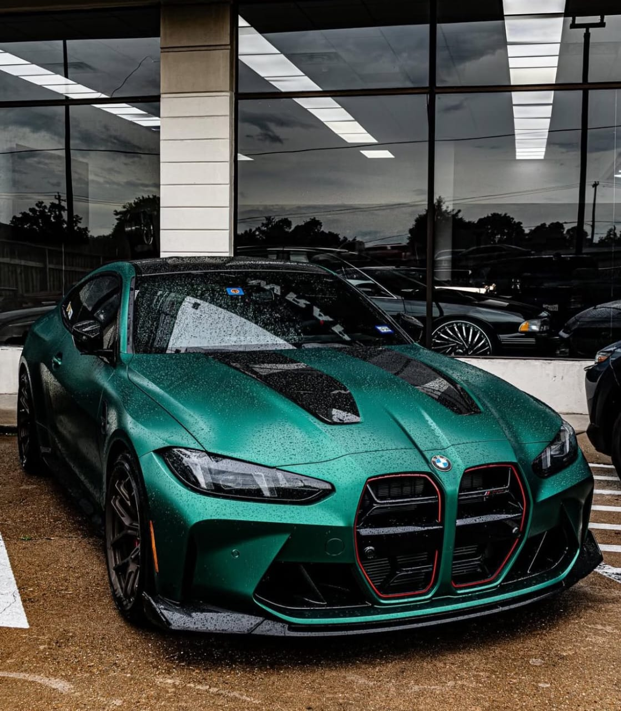

<!DOCTYPE html>
<html lang="en"></html>
<head>
    <meta charset="UTF-8">
    <meta name="viewport" content="width=device-width, initial-scale=1.0">
    <title>MY WEBSITE Channel</title>
    <link rel="stylesheet" href="styles.css">
    <link href="https://fonts.googleapis.com/css2?family=Poppins:wght@300;400;600&display=swap" rel="stylesheet">

</head>

<body>
    
    <header>
        <h1>WELCOME TO REINHARD'S WEBSITE</h1>
        <nav>
            <ul>
                <li><a href="#introducion">Introduction</a></li>
                <li><a href="#about">About Me</a></li>
                <li><a href="#Experience">Experience</a></li>
                <li><a href="#contact">Contact</a></li>
                <li><a href="#hobbies">Hobbies</a></li>
                <li><a href="#goals">Goals</a></li>
                <li><a href="#values">Values</a></li>
                <li><a href="#favorite-quote">Favorite Quote</a></li>
                <li><a href="#skills">Skills</a></li>
                <li><a href="#future-aspirations">Future Aspirations</a></li>
                <li><a href="#personal-interests">Personal Interests</a></li>
                <li><a href="#main-goals">Main Goals</a></li>
                <li><a href="Dream-machine">dream machine</a></li>
                
                 
                
                
            </ul>

        </nav>
    </header>

    <main>
    
        <section id="introducion">
            <h2>
                INTRODUCTION
            </h2>
            <p>
                My name is Reinhard Baraka. Am 19 years old
            </p>
        </section>

        <section id="about">
            <h2>
                ABOUT ME
            </h2>
            <p>
                Am a student at Kiambu Institute of Science and Technology pursuing a diploma in Software development.
                I am a junior passionate software developer with advanced skills in web development and programming.
            </p>
        </section>

        <section id="Experience">
            <h2>EXPERIENCE</h2>
            <p>
                I have served as the school ICT president for two years and have been involved in organizing various technical events and workshops.Through that I have gained valuable leadership and organizational skills.I have also worked on several web development projects, contributing to both frontend and backend development.Here I have gained practical experience in building responsive websites and managing databases.It has also helped me develop strong problem-solving,debugging skills and also coding skills.
            </p>
        </section>
        <section id="contact">
            <h2>
                Contact
            </h2>
            <p><contact:>

            </contact:>

            <254>
                0743518122
            </254>
        </p>/
        <254>
                0707678213

            </254>
            <p>

               <a class="Email"
                href="https://mail.google.com/mail/?view=cm&fs=1&to=barakareinhard477@gmail.com">
                Email Us</a>
                </p>
        
        </section>
        <section>
            <h2>
                Follow Me On Social Media
            </h2>
            <p>
                Facebook: 
                <a class="fb" href="https://share.google/HjrA37olwoVuPTGRn">https://www.facebook.com/reinhard.baraka.1ss</a>

            </p>
            <p>
                Instagram: 
            <a class="iG" href="https://share.google/akWhtjiZeNTWZ8H19">https://www.instagram.com/barr.y_phenom/</a>
            </p>


                <p>Twitter: https://twitter.com/ReinhardBaraka</p>


        </section>
            <section id="hobbies">
                <h2>My Hobbies</h2>
                <p>In my free time, I enjoy playing football, listening to music, and exploring new technologies. I also have a passion for photography and often spend time capturing moments with my camera.</p>
            </section>
            <section id="goals">
                <h2>
                    My Goals
                </h2>
                <p>
                    My long-term goal is to become a successful software developer and contribute to innovative projects that make a positive impact on society. I am committed to continuous learning and growth in the field of technology.<
                    /p>

            </section>
            <section id="values">
                <h2>My Values</h2>
                <p>I value integrity, creativity, and collaboration. I believe in the power of teamwork and strive to create a positive and inclusive environment in all my endeavors.</p>
            </section>
            <section id="favorite-quote">
                <h2>My Favorite Quote</h2>
                <p>"The only way to do great work is to love what you do." - Steve Jobs</p>
            </section>
            <section id="skills">
                <h2>My Skills</h2>
                <p>I have proficiency in programming languages such as HTML, CSS, JavaScript, and Python. I am also skilled in web development frameworks like React and Django. Additionally, I have experience with database management and version control systems.</p>
            </section>
            <section id="future-aspirations">
                <h2>My Future Aspirations</h2>
                <p>In the future, I aspire to work on cutting-edge software projects that solve real-world problems. I aim to become a senior software developer and eventually lead a team of developers in creating innovative solutions. My goal is to contribute to open-source projects and mentor aspiring developers.</p>

            </section>
            <section id="personal-interests">
                <h2>My Personal Interests</h2>
                <p>Aside from technology, I have a keen interest in traveling and exploring different cultures. I also enjoy cooking and trying out new recipes. In my leisure time, I like to read books on personal development and technology trends.</p>
                <section id="main-goals">
                    <h2>My Main Goals after becoming successful</h2>
                    <p>My main goals after being a mogul is to use my wealth and influence to support education, healthcare, and environmental sustainability initiatives. I also aim to inspire and empower others through mentorship and by creating opportunities for underrepresented groups in technology.</p>
                    <p>I also plan to do philanthrophic work to give back to society and help those in need.</p>
                </section>
                <section>
                    <h2>My Learning Journey</h2>
                    <p>My learning journey in software development has been both challenging and rewarding. I have taken various online courses, attended workshops, and participated in coding bootcamps to enhance my skills. I believe in continuous learning and staying updated with the latest industry trends.</p>
                </section>
                <section id="My Dream Machine">
                    <h2>My Dream Machine</h2>
                
                </section>

                 </main>  

    <footer>
        <p>&copy; 2026 Reinhards HTML Page. All rights reserved.</p>
    </footer>

    <script src="script.js"></script>
